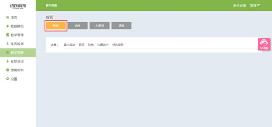

教学教案
视频教程：
1. 登录动跃体育教学管理平台后，进入平台操作界面。
2. 点击进入教学资源 > 点击教案按钮，进入教学资源，系统默认就在教案页面，如下图:

3. 根据教师的所需查找的教学教案内容，依次选择大类> 中间类 > 年级
>大类：根据体育课堂教学内容，按照运动方式和器材分为基本运动、田径、球类、体操武术和特色项目。
>中间类:每个教学大类下面，都细分为不同的具体运动项目。
>年级:各种运动强度不同，适宜的学生程度不同，分为不同的年级教学。

4.点击教案名称 , 查看教案详细内容 , 如下图:
>相关结果：选择分类后，会显示资源库中该分类下有多少教案
>教案相关：蓝色文本为教学教案名称，教学目标可为教师提供此教案学习目标，方便教师快速找到自己想要的教案。
5. 教案详细内容，包含整堂课的上课内容，开始、准备、基本、游戏、结束部分，以及运动强度、注意事项、预防措施、家庭作业，从各个方面匹配教师课堂所需。